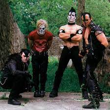

WHAT IS PUNK ?
Welcome to the world of Punk—a vibrant, rebellious movement that has influenced music, fashion, art, and culture since the 1970s. But what exactly is Punk? Let's dive in!
THE ORIGINS ON PUNK !
Punk emerged in the mid-1970s as a reaction against the mainstream music scene. With roots in garage rock and protopunk bands, it exploded into a distinct genre characterized by its raw sound, DIY ethic, and anti-establishment attitude. Key cities like New York and London became hotbeds for this revolutionary movement, giving rise to iconic bands.
THE SOUND OF PUNK !
Punk music is marked by its fast tempos, short song durations, and straightforward instrumentation. Typically featuring distorted guitars, driving basslines, and powerful vocals, the genre embodies a sense of urgency and defiance. Lyrics often tackle themes like alienation, political discontent, and social issues, challenging the status quo and empowering listeners to question authority

SUBGENRES OF PUNK OVERVIEW
there are countless subgenres of punk but the most popular are:
- Hardcore: Faster and more aggressive, with bands like Minor Threat and Black Flag.
- Crust punk: differs slightly from punk in general, as the “crust” comes from being dirty or making things yourself, sometimes out of trash.
- Riot Grrrl. Riot grrrl was a relatively short-lived but very important punk rock movement. run by female bands, this movement helped a lot during feminism movements.
- Anarcho-punk: an ideological subgenre of punk rock that promotes anarchism. Some use the term broadly to refer to any punk music with anarchist lyrical content, which may figure in crust punk, hardcore punk, folk punk, and other styles.
THE PUNK AESTHETIC
Punk is not just about music; it’s a lifestyle. The punk aesthetic is characterized by:
- Fashion: Distinctive styles include leather jackets, ripped jeans, band t-shirts, and bold hairstyles (think mohawks and bright colors). Punk fashion often reflects individuality and rebellion against societal norms.
- Art and Graphics: DIY art, zines, and album covers often feature bold graphics, political slogans, and a raw, unrefined style that embodies the spirit of punk.
- Attitude: The punk ethos is centered around authenticity, self-expression, and a disdain for commercialism. It encourages individuals to think critically, challenge societal norms, and create their own paths.

THE IMPACT OF PUNK
Punk’s influence extends beyond music and fashion. It has shaped various cultural movements, from skateboarding and street art to feminist and LGBTQ+ activism. Its DIY philosophy has inspired countless artists and creators to pursue their passions without conforming to traditional industry standards.